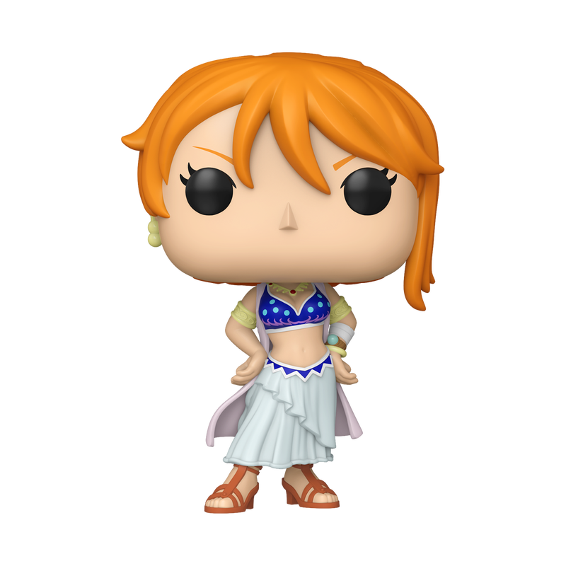

Nami
¡Prepárate para navegar por el Grand Line! Nami, la valiente navegante de los Piratas del Sombrero de Paja, llega con su característico cabello naranja. ¡Una compañera indispensable para cualquier colección de One Piece!
Encuentra tus personajes favoritos y agrégalos a tu colección.

¡Prepárate para navegar por el Grand Line! Nami, la valiente navegante de los Piratas del Sombrero de Paja, llega con su característico cabello naranja. ¡Una compañera indispensable para cualquier colección de One Piece!